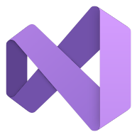

01 / FLOW↗
Operational
Follow conditions, returns, state changes, and effects.
if (!ready) return;count += 1;Bloom gives your editor four ways to read the same code. Follow behavior, find interfaces, map structure, and spot risky operations.
Bloom is a VS Code extension that adds focused code views. Follow behavior, find interfaces, map structure, and review risky-operation cues.
Follow conditions, returns, state changes, and effects.
if (!ready) return;count += 1;Find functions, calls, contracts, components, and APIs.
function completeTask()TaskCard(onTap: save)Spot imports, declarations, scopes, and stable values.
class TaskQueue {final List<Task> tasks;Review lexical cues for process execution, deletion, and dynamic evaluation.
subprocess.run(command)Review cue · not a security findingFollow a task from its queued state through confirmation and execution. The same realistic flow can be read by behavior, structure, boundaries, or operation risk.
import loggingimport subprocessfrom dataclasses import dataclass, fieldlogger = logging.getLogger(__name__)@dataclassclass Task: command: str done: bool = False attempts: int = 0@dataclassclass TaskQueue: tasks: list[Task] = field(default_factory=list) def run_next(self, confirmed: bool = False): for task in self.tasks: if task.done: continue if not confirmed: return False task.attempts += 1 result = subprocess.run(task.command, shell=True, capture_output=True)REVIEW if result.returncode: logger.warning("Task failed: %s", task.command) return False task.done = True return True return FalseChoose a framework to reveal its complete Bloom-highlighted code picture.
Browse the chips or search the complete language set.
Install Bloom and use all four code views today.

IN PROGRESSInstall Bloom in a click, download the VSIX, or support continued development.
Requires desktop VS Code 1.95 or newer. In VS Code, choose “Extensions: Install from VSIX…” to install a downloaded file.Four focused code views for reading and reviewing code in VS Code.
View extension ↗